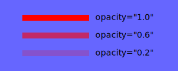
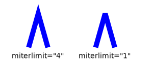
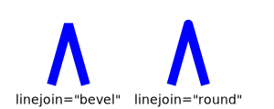
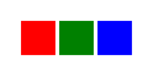

Section 3.1 General attributes
We begin this chapter with a discussion of attributes common to all graphical elements. Many attributes modify properties that are either \(1\)- or \(2\)-dimensional. For instance, a
<graph> will consist of a curve with an attribute @stroke that determines its color. A <polygon> also has a @stroke attribute that determines the color of the boundary of the polygon. It also has a @fill attribute that determines the color used to shade the \(2\)-dimensional region enclosed by the <polygon>.Subsection 3.1.1 Colors
There are several ways to specify a color, the most simple being to use its name, such as
@stroke="blue". Alternatively, one may specify the red, green, and blue components either in hexadecimal, @fill="#rrggbb" or @fill="#rgb", or decimal, @fill="rgb(r,g,b)", where each value is between 0 and 255. Some examples are shown in Figure 3.1.1.Color should be used judiciously, and the colors used in a single diagram should contrast highly with one another. If you find that you are using a lot of colors, perhaps the idea you are communicating could be better expressed in another way, such as a series of linked diagrams.
Subsection 3.1.2 Stroke attributes
The two most important attributes you will use are
@stroke and @thickness. All the possible stroke attributes are described here roughly in order of importance. You will likely never need the attributes toward the end of this list.- Stroke
-
The
@strokeattribute determines the color used to draw \(1\)-dimensional components, as demonstrated in Figure 3.1.1. For instance,@stroke="blue"will cause the \(1\)-dimensional component of the element to be rendered in blue. If the attribute has the value@stroke="none", then the \(1\)-dimensional component of the element will not appear.Note that tactile diagrams are rendered with@stroke="black"to guarantee predictable behavior when embossed. - Thickness
-
The attribute
@thicknessdetermines the width of the \(1\)-dimensional component in SVG coordinates. That is, if a graphical element has the attribute@thickiness="1"in a diagram whose dimensions are \(300x300\text{,}\) then the width of the corresponding graphical component will be \(1/300^{th}\) of size of the diagram. Figure 3.1.2 demonstrates different thicknesses.Figure 3.1.2. Stroking with various thicknesses - Dash
-
Use the
@dashattribute to create dashed lines as shown in Figure 3.1.3.Figure 3.1.3. Dashed lines In a tactile diagram, the@dashattribute is useful for distinguishing different graphical components. Feedback from users indicates that@dash="9 9"is a good choice as the dashes and spaces are \(1/8^{th}\) of an inch. - Opacity
-
Transparency is available using the
@opacityattribute. The value should be between 0.0 and 1.0 with 1.0, the default, being entirely opaque. This attribute applied to both the@strokeand@fillof a graphical component. If the opacity is meant to be applied to only the stroke, use@stroke-opacity.Figure 3.1.4. These lines have @stroke="blue"and varying opacities - Miterlimit
-
On rare occasions, you may find that you need to adjust the
@miterlimitattribute. As seen in Figure 3.1.5, it sometimes happens that a small angle produces a sharp point. The point can be removed by lowering the@miterlimitattribute from its default value of 4.Figure 3.1.5. Lowering the @miterlimitcauses sharp points to be blunted - Linejoin
-
The
@linejoinattribute determines how lines are joined. The default value is@linejoin="miter", whose behavior is controlled with the@miterlimitattribute described above. However, this can be changed as shown in Figure 3.1.6.Figure 3.1.6. Various choices for the @linejoinattribute - Linecap
-
The
@linecapattribute determines how lines are capped at their ends. The default value is@linecap="butt"with the other options shown in Figure 3.1.7. The option@linecap="square"causes a square to added to the end of the line, which extends it slightly.Figure 3.1.7. Options for @linecap
Subsection 3.1.3 Fill attributes
Similarly, there are a few attributes to describe the properties used to fill a region.
- Fill
-
The
@fillspecifies the color used to fill a region, as seen in Figure 3.1.8.Figure 3.1.8. Squares filled with @fill="red", blue, and green.Tactile diagrams are rendered with@fill="lightgray"to create a consistent texture. - Fill opacity
-
The
@fill-opacityattribute provides a given degree of transparency, as demonstrated in Figure 3.1.9.Figure 3.1.9. Squares filled with @fill-opacity="1.0", 0.6, and 0.2. - Fill rule
-
The
@fill-ruleattribute determines how more complicated regions are filled, as demonstrated in Figure 3.1.10.Figure 3.1.10. Squares filled with @fill-rule="nonzero", the default, and evenodd.
Subsection 3.1.4 Handles
In Section 1.2, we described how graphical elements can have an identifying handle, given by the value of its
@at attribute, by which they may be referenced from within an annotation. For instance, @at="function-f" provides an identification of this graphical element.If you look inside an SVG image file created by PreFigure, you will see that the handles are converted into
@id attributes, and it is perfectly fine to use @id="function-f" rather than the @at attribute. The @at attribute is provided to avoid any confusion with @xml:id attributes.As we now begin to describe different types of graphical components, we will sometimes need to describe how a component’s handle is processed.